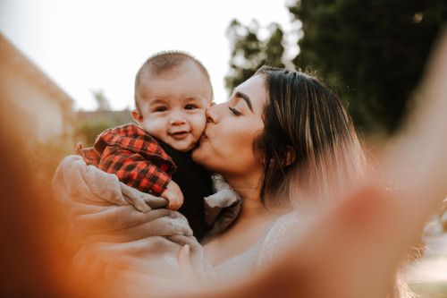

Про “начала начал”: становлення кишкового мікробіому в дітей
Десь із 10-го тижня вагітності ось ці маленькі червячки, які потім колись виростають у поважних дядь і тьоть, вже активно ковтають амніотичну рідину і ці всі мікроби вже починають освоювати крихітний кишківник. Тому так, інфекційні хвороби та антибіотикотерапія під час вагітності можуть також мати вплив на становлення мікробіоти нового організму.
Спосіб народження – один з критичних факторів, що впливає на становлення кишкового мікробіому. Після проходження родовими шляхами, немовля народжується вкрите материнськими мікробами. Деяку їх кількість воно заковтує і колонізація шлунково-кишкового тракту набуває нових темпів.
Під час кесаревого розтину становлення мікробіоти відбувається повільніше. Спочатку у кишківнику домінують мікроорганізми, характерні для шкірних покривів. І лише дещо згодом починає переважати лактобацильний, біфідобактерійний і нарешті бактероїдний ландшафт. У малюків, які народилися шляхом кесаревого розтину, ступінь спорідненості мікробіоти з материнською дещо нижче у порівнянні із малюками, які народилися при вагінальних пологах. Такі відмінності прослідковуються у перші два роки.
Також дослідники відзначають, що у дітей, народжених шляхом кесаревого розтину, існує вища ймовірність виникнення атопічних станів та інфекцій, зокрема, спричинених Closridium difficile.
Ще одним суттєвим фактором, який активно вивчається, і який впливає на швидкість становлення мікробіоти – спосіб вигодовування немовлят.
Материнське молоко містить чимало факторів росту для мікробіоти кишківника. Та і власне лактобацили з біфідобактеріями також там є. Це з тих мікроорганізмів, які у всіх на слуху, а деякі дослідження кажуть, що у грудному молоці взагалі їх сотні видів.
Фактор передчасних пологів та недоношеність немовлят істотно впливає на становлення кишкового мікробіому. У недоношених малюків становлення мікробіоти затягується, він характеризується меншою різноманітністю та вразливіший до умовно патогенних бактерій.
Застосування антибіотиків є часто пов'язаним із факторами недоношеності та кесаревого розтину. Із застосуванням антибіотиків пов'язують затримку становлення мікробіоти, зокрема, колонізації кишківника біфідобактеріями, у той час як починають переважати протеобактерії.
Примітка: важливо розуміти та співвідносити ризики, адже розтягнення у часі процесу становлення мікробіоти та ймовірність виникнення супутніх розладів – практично ніщо у порівнянні із можливими ускладненнями, яких можна уникнути завдяки таким благам цивілізації, як кесарів розтин, антибіотикотерапія та сучасні багаті необхідними речовинами суміші для вигодовування.
Цілком справедливо очікувати, що на становлення мікробіоти, як і на все в нашому житті, має вплив наша генетика . Дані в цьому питанні отримуються переважно із досліджень, проведених із залученням генетично ідентичних близнюків. І таких досліджень, відповідно, не так багато. Вони говорять про те, що такий вплив справді існує – мікробіота ідентичних близнюків справді має вищу спорідненість, ніж неідентичних.
Оточення, географічне місце проживання, склад родини, гігієнічні звички у перші роки життя відіграють велику роль у формуванні кишкового мікробіому.
Наявність старших братів чи сестер, а також тварин сприяє більшому мікробному різноманіттю. Цілування, обіймання і не зловживання миючими засобами та дезінфектантами позитивно впливають на становлення кишкової мікробіоти та збільшують шанси того, що джерелом її будуть близькі люди, а не випадкові бактерії, принесені з метро.
І важливо підкреслити, що створення "стерильного" середовища навколо маленької дитини – то часто шлях до алергічних проявів і дисбіотичних явищ у майбутньому. Бо в перші роки життя (а особливо в перший рік) імунітет дитини, так би мовити, калібрується. Їй потрібен контакт із різноманітними непатогенними бактеріями для навчання імунної системи. Так вона навчається відрізняти своїх від чужих, регулювати інтенсивність свого реагування на антиген – щоб потім при контакті з кожною новою ще невідомою біологічною молекулою не бити гістамінову тривогу "про всяк випадок".
Оце, власне, і пояснює так звану гігієнічну теорію виникнення алергій, атопічних станів, астми та інших патологій, пов'язаних із порушенням запальної відповіді. На цю тему є чимало досліджень та спостережень. Ці всі явища притаманні жителям розвинених країн, де люди звикли дбати про гігієну та багато часу проводити в приміщенні. Відповідно, малюки переважно проводять своє дозвілля у чистеньких охайних манежах, а не гребуться у багнюці, як їх однолітки із менш успішних країн. Це, звичайно, не приклад до наслідування, але однією з передумов для гігієнічної теорії став той факт, що діти фермерів практично не страждають на астму та алергії. Бактеріальні ліпополісахариди та інші фрагменти клітинних стінок бактерій, що містяться у великій кількості в грунті та хлівах, тренують імунітет і не дозволяють йому дуріти від нудьги.
Цікавими також є і дослідження, в яких вивчається внесок у це питання наших домашніх тварин. Котики та собачки (більше) здійснюють протективну дію при виникнення астми та алергічних проявів у дітей. По суті вони є векторами, що розносять мікроби. І це не дає нам надміру "мікробно" збідніти.
Мить соціальної реклами : варто розуміти однак, що тварина в домі, то не лише цінні мікроби, а ще й кігті та зуби, тому ніколи не залишайте дитину наодинці з твариною!
А також, користуючись нагодою, додаємо, що це ще й велика відповідальність. Заводячи собачку, пам'ятайте, що її потрібно буде вигулювати і часто – бо зайнятість господарів перетворює життя тваринок на муку та сечокам'яні хвороби. Ну і також, ми щиро віримо, що Ви завжди користуєтеся повідками та прибираєте за своїми собачками, не наражаючи оточуючих на небезпеку та можливість ближче познайомитися із кишковим мікробіомом своїх улюбленців.
Необхідно також і усвідомлювати різницю між факторами, що сприяють збагаченню мікробіому малюка, і тими, що можуть наражати його на небезпеку.Тобто якщо ви знаєте, що здорові, та їсте з однієї ложки – це нормально. А перебування у місцях скупчення людей, особливо під час епідемічних спалахів, контакти із хворими – це високий ризик. Миття підлоги з миючим засобом та використання антибактеріальних серветок – це зайве. А миття рук, бороди, гігієна мобільного телефону та бороди – це важливо.
Цікаве питання – протягом якого часу відбувається оте все становлення мікробіоти? Відповідь – а по-різному. Вважається, що до 1 року у дитини вже є свій неповторний мікробний профіль, у 2-5 років мікробіота кишківника вже нагадує мікробіом дорослих. Але, в цілому, перші 3 роки вважаються найкритичнішими для формування кишкового мікробіому.

Photo by Omar Lopez on Unsplash